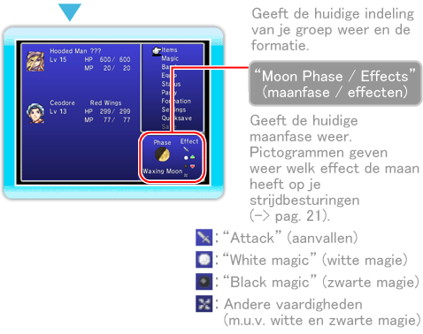
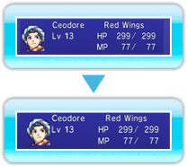

14 |
Het menuscherm / navigeren |
 |
|
Druk op de “Field Map” op om naar het menuscherm te gaan. Druk op 

● GroepKies “Party” (groep) om je groep anders in te delen. Kies eerst een personage en vervolgens het personage of de locatie waarmee je wilt wisselen. Druk op

● FormatieIn het menu “Formation” (formatie) kun je instellen welke positie elk personage heeft in de groep. Personages op de achterste rij beschikken over minder aanvalskracht en nauwkeurigheid (uitzonderingen daargelaten), maar ontvangen ook minder schade dan de personages in de voorste rij.
|
 om je keuze te bevestigen.
om je keuze te bevestigen. |
 |
 |